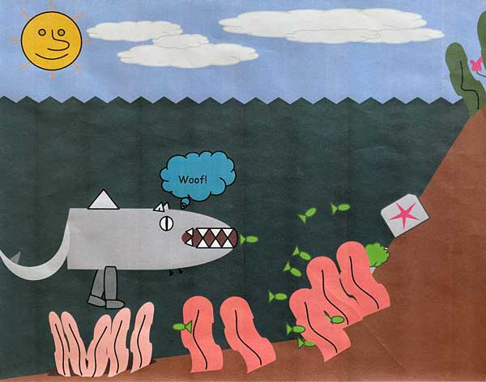

What are Dharks?
Dog Sharks (selachimorpha canis), often called dharks, are a group of elasmobranch fish characterized by a cartilaginous skeleton, three gill slits on the sides of the head, and wimpy front legs that appear to serve no use. Due to their incredible mobility, dharks thrive in costal beaches and are found at depths of 5 metres. Since their discovery, they have been found all accross the pacific ocean and are commonly seen by tourists. These unique creatures are apex predators – organisms at the top of their underwater food chain.
What We Do
